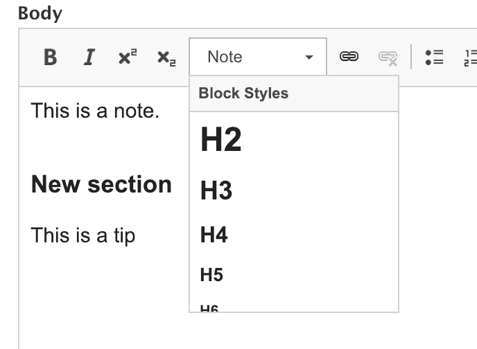

The State of the Migrate API in Drupal 8
Benji Fisher
February 5, 2019
Introduction
The State of the Migrate API is Strong
Thanks for coming!
I know you have many entertainment choices this evening.
About Me
- Benji Fisher
- @benjifisher on d.o since 2010-01
- @benjifisher on GitHub
- @benjifisher on GitLab
- @benji17fisher on Twitter
About Isovera

- Strategy
- Design
- Development
- Training
The Big Picture
Geese Fly North
New LAMP for Old
- Site redesign
- Old site is Drupal 7, Drupal 6, WordPress, …
- New site is Drupal 8
All Your Data Are Belong To Us
Migrate API takes anything into Drupal 8:
- Feed (XML, RSS, Atom)
- CSV (Users, Events)
- One time, incremental, update
History
Earlier versions
- 6.x-1.x-dev: March 9, 2009
- 6.x-1.0: March 20, 2010
- 6.x-2.0: March 10, 2011
- 7.x-2.0: March 10, 2011
Credits
- Mike Ryan
- Moshe Weitzman
- Economist.com
Case study: The Economist.com data migration to Drupal
What Migrate Does Well
Even the early versions did many things right:
- Migrate keeps track of old/new IDs
- Support iterations (rollback)
- Incremental migration
Original Goals (D8)
- This is our upgrade path! (D6 and D7)
- Work through the admin UI
- Config (Fields, Views, Date formats)
- Content (Nodes, Comments, Blocks, Taxonomy)
- Handle all sorts of modules
Would You Believe …
- Simple, 1-language sites via admin UI
- Robust tools for custom migrations
- Keep all the good parts of earlier versions
Basic Migration Structure (ETL)
Extract, Transform, Load (ETL)
The Migrate API follows the standard ETL approach:
- Extract (Source): Get the old data.
- Transform (Process): Massage the data.
- Load (Destination): Create nodes, taxonomy, users, …
Extract (Source)
- Another Drupal site (D6, D7, D8)
- Another CMS (WordPress, SiteCore, custom)
- Static XML, CSV, SQL
- Dynamic XML, JSON (Feeds)
- Other: FoxPro, Google Sheets
Extract (continued)
Some people put a lot of effort into this step, so that the next step is simple.
I prefer to do more work in the Transform (process) step. I think there is more opportunity for reusable code there.
There is no Right Way to do it.
Transform (Process)
- Convert data formats
- Clean up nasty markup (
font,blink,marquee) - Split strings into lists
- Split blobs into Paragraphs
Load (Destination)
- Entity (node, taxonomy, user, …)
- Config (field, view, …)
This short list is a feature, not a bug.
The Migrate API is written for Drupal. It already “knows” the destination.
Theory and Practice (ETL)
| Read source | Write destination | |
|---|---|---|
| Extract | Theory | |
| Transform | Practice | Practice |
| Load | Theory |
Let Me Count the Ways
A typical migration project has several migrations, each with its own three stages.
“Several” means dozens. Maybe hundreds.
Easy, Not So Easy, Hard
The Easy Part
Migrate All the Things:
- Files
- Roles
- Users
- Taxonomy
- Nodes
The Not So Easy Part
Migrate relations between things:
- Roles attached to users
- Taxonomy attached to nodes
- Entity Reference (ER) fields
- Links in Body fields
- Previous/Next links
The Hard Part
- Translations
- Revisions
- Field Collections and Paragraphs
Understand the Source
Triage
- Prioritize
- Migrate manually? (but relations are hard)
- Bit bucket
Audit, Review, Explore
- Structure (translations, revisions, references, nested data)
- Markup
- Internal links
- What isn’t there? (e.g., meta tags)
What Could Possibly Go Wrong?
All the stuff your shiny, new site does not have:
- Change your mind
- Replicated structure from previous migrations
- Undocumented features
- Forgotten experiments
- Trojan horses
If only there were one word …
Dumb Joke
The Fun Part: Transform (Process)
Source and Destination
source:
plugin: d7_node
node_type: article
destination:
plugin: entity:node
default_bundle: articleSimple Cases
process:
langcode:
plugin: default_value
source: language
default_value: en
title:
plugin: callback
source: title
callable: trim
status: status
created: createdMigration Lookup
process:
uid:
plugin: migration_lookup
migration: user
source: node_uidFirst Non-Empty (First Try)
parent_or_self:
-
plugin: callback
callable: array_filter
source:
- '@parent_tid'
- tid
-
plugin: callback
callable: array_shiftFirst Non-Empty (New Way)
parent_or_self:
-
plugin: callback
callable: array_filter
source:
- '@parent_tid'
- tid
-
plugin: array_shiftFirst Non-Empty (Old Way)
parent_or_self:
-
plugin: callback
callable: array_filter
source:
- '@parent_tid'
- tid
-
plugin: callback
callable: array_values
-
plugin: extract
index:
- 0Parsing HTML (Cthulhu Way)
HTML (DOMDocument)

'field_body/value':
-
plugin: dom
method: import
source: body
-
plugin: dom_apply_styles
format: pega_html
rules:
-
xpath: '//h2'
style: H2
-
plugin: dom
method: exporthttps://www.drupal.org/project/migrate_plus/issues/2958281 (with Marco Villegas (@marvil07) for Pega)
Advice
General Advice (1/2)
- Understand the source.
- Look for test cases before you develop.
- Log a message whenever you skip an item.
- unpublished
- empty title or body
- skip this language
General Advice (2/2)
- Develop and test small pieces
- Understand why some content was skipped.
- Do not copy untested code.
- You will make mistakes, so code review and QA are critical.
The Future
Feeds Migrate
The Feeds module in D8 should be a front end to the Migrate API.
Job Security
- June 3, 2020: Target for Drupal 9
- November 2021: End of Life for D7, D8
Plenty of work for people who can handle custom migrations.
Job Insecurity
- There is a better way.
- Divide and Conquer.
- Hard part: interface or API (Stroustrup)
- JSON API, GraphQL
- (Think of Gatsby.)
Migrations will not always be hard.
Summary
Outline
- Introduction
- The Big Picture
- History
- Basic Migration Structure (ETL)
- Easy, Not So Easy, Hard
- Understand the Source
- The Fun Part: Transform (Process)
- Advice
- The Future
- Summary
References (1/3)
- Migrating Geese: USDA NRCS South Dakota, Conservation Program of the Farm Bill Provides Rest for Migrating Cranes and Geese in Hanson County, SD (16447925733), CC BY-SA 2.0
- The Economist.com data migration to Drupal: https://www.drupal.org/node/915102
.jpg){kind=link}
References (2/3)
- HTML and regex: https://stackoverflow.com/questions/1732348
- HTML processing with DOMDocument: https://www.drupal.org/project/migrate_plus/issues/2958281
- Feeds Migrate: https://www.drupal.org/project/feeds_migrate
References (3/3)
- Migrate API docs: https://www.drupal.org/docs/8/api/migrate-api
- Shameless plug: Importing an Atom Feed …